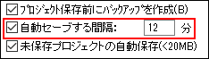
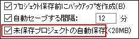

FAQ-466 プロジェクトの自動保存機能はありますか?
AutoSave-Project
最終更新日：2021/03/03
Originのオプションダイアログで自動セーブする間隔x分を有効にしておくと、プログラムのクラッシュや停電が発生した場合でも、ほとんどの作業を復旧できます。
- 環境設定：オプション を選択して、オープン/クローズタブをクリックします。
- 自動セーブする間隔x分チェックボックスにチェックを入れます。自動保存を実行する間隔を指定することができます。デフォルトは12分間隔です。
- 
Originのバージョンが2021b以降の場合
- 自動セーブする間隔x分が有効（デフォルト）になっている場合、現在のプロジェクトの内容は定期的に<システムドライブ>\Users\ユーザ名\Documents\OriginLab\Unsaved （デフォルトのパス）に保存されます。
- 名前付きのプロジェクトが変更、保存、および正常に閉じられた場合、または、UNTITLEDプロジェクトに名前が付けられ、保存され、通常どおりに閉じられた場合、\Autosaveには何も保存されません。
- セッション中に、開かれて変更された名前付きプロジェクトは、\AutosaveにprojectFileName-xxxxxx.opjuまたは.opjとしてリストされます。変更を保存せずにプロジェクトを閉じると、プロジェクトの名前はLast-AutoSave.opjuまたはopjになり、前のLast-AutoSave.opjuまたはopjが上書きされます。プログラムが突然終了した場合は、直近のprojectFileName-xxxxxx.opjuまたは.opjが保存されます。
- セッション中、UNTITLEDプロジェクトは\AutosaveにUNTITLED-xxxxxx.opjuまたは.opjとしてリストされます。名前付きファイルとして保存せずにUNTITLEDプロジェクトを閉じると、プロジェクトにはLast-AutoSave.opjuまたはopjという名前が付けられ、前のLast-AutoSave.opjuまたはopjが上書きされます。 プログラムが突然終了した場合は、直近のUNTITLED-xxxxxx.opjuまたは.opjが保存されます。
- 自動保存はデフォルトで UNTITLED（名前なしの）プロジェクトに対して有効です。UNTITLEDプロジェクトの自動保存機能を無効にするには、@DASU=1 に設定します。
- Autosaveフォルダは、次のいずれかの方法で開くことができます。(a) メニューのヘルプ：フォルダを開く：自動保存を選択する、 (b) メニューの環境設定：オプション > システムパスタブにリストされている自動保存フォルダのパスを開く、 (c) <システムドライブ>\Users\ユーザ名\Documents\OriginLab\Unsaved （デフォルトのパス）にアクセスする。
Originのバージョンが2018bから2021の場合
- 自動セーブする間隔x分チェックボックスをオンにしている場合は、 \Autosaveフォルダに、projectFileName-xxxxxxまたは.opjとしてリストされたプロジェクトが保存されます。
- 自動保存はデフォルトで UNTITLED（名前なしの）プロジェクトに対して有効です。UNTITLEDプロジェクトは、\AutosaveフォルダにUNTITLED-xxxxxx.opju または .opj と表示されます。
- UNTITLEDプロジェクトの自動保存機能を無効にするには、@DASU=1 に設定します。
- Autosaveフォルダは、次のいずれかの方法で開くことができます。(a) メニューのヘルプ：フォルダを開く：自動保存を選択する、 (b) メニューの環境設定：オプション > システムパスタブにリストされている自動保存フォルダのパスを開く、 (c) <システムドライブ>\Users\ユーザ名\Documents\OriginLab\Unsaved （デフォルトのパス）にアクセスする。
Originのバージョンが2018以前の場合
- 自動保存を実行するには、プロジェクトファイルを保存しておく必要があります。新規のOriginプロジェクトを開き、まだそれを保存していない場合、自動保存処理は機能しません。(有効なパス名とファイル名が無いため)
- 自動保存プロセスは、現在のプロジェクトのコピーをAutosaveサブフォルダ（2017以前はUser Files フォルダと同じフォルダに保存されています）に保存します。Origin 2018の場合、 \Autosave at C:\Users\user\Documents\OriginLab)にあります。
- プロジェクト名には識別子番号が付加されます（例： "MyFileName-197238406.opj"）
自動保存されたファイルはどうなりますか？
- プロジェクトを保存してOriginを正常に終了すると、自動保存されたファイルは削除されます。
- Origin 2018以降、Autosaveフォルダ内のファイルの「保管時間」は、「＠」システム変数@ASKHによって制御されます。
詳細情報は、 プロジェクトファイルの自動保存をご覧下さい。
4未保存プロジェクトの自動保存
プロジェクト（UNTITLEDプロジェクトまたは変更された名前付きプロジェクト）を保存せずに閉じるか終了すると、名前を付けて保存/保存のプロンプトが表示されます。Origin 2018以降、「いいえ」を選択すると、(1)未保存プロジェクトの自動保存は有効になり、(2)プロジェクトファイルのサイズがLabTalkシステム変数@USMの値 (デフォルト = 20MB)より小さい場合、プロジェクトファイルを閉じる前に自動保存されます。
- 
- プロジェクト名がUNTITLEDの場合、C:\Users\User\Documents\OriginLab\Unsaved\UNTITLEDに保存されます。
- プロジェクトが変更されて名前が付いている場合、C:\Users\User\Documents\OriginLab\Unsaved\projectNameに保存されます。
ファイルは、閉じるまたは終了時に保存を拒否した場合にのみ保存されるため、この機能では回復可能なデータのソースが生成されない場合があります。ただし、ユーザはファイルが存在する可能性があることを知っておく必要があります。デフォルトでは7日間保持されます。
未保存プロジェクトを修復
- Originを起動します。
- ヘルプ: フォルダを開く: 非保存のプロジェクトをクリックします。
- 保存していないファイルのフォルダを開きます。
キーワード:電源、クラッシュ、紛失、バックアップ、自動保存、修復、未保存